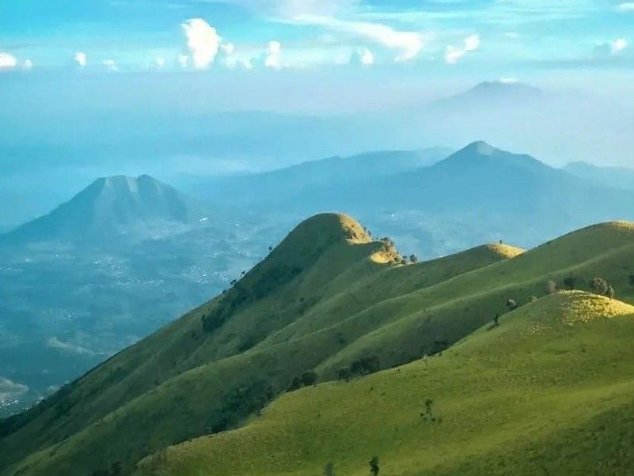
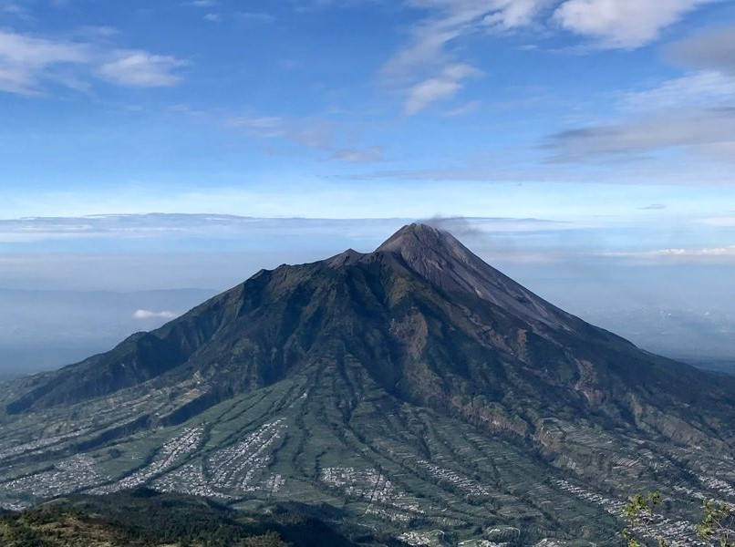
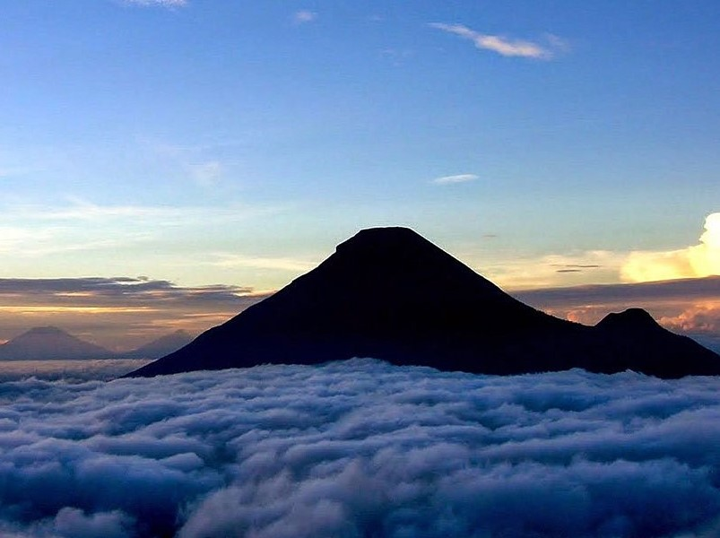
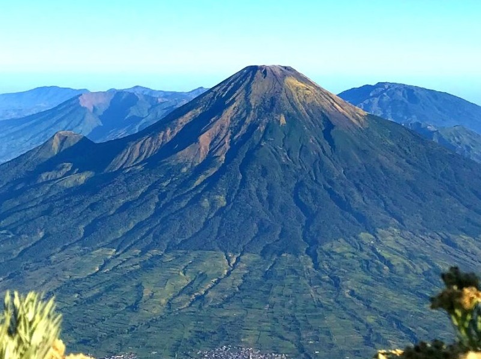
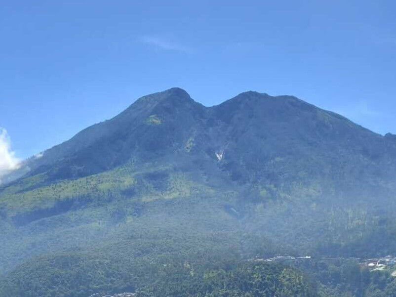
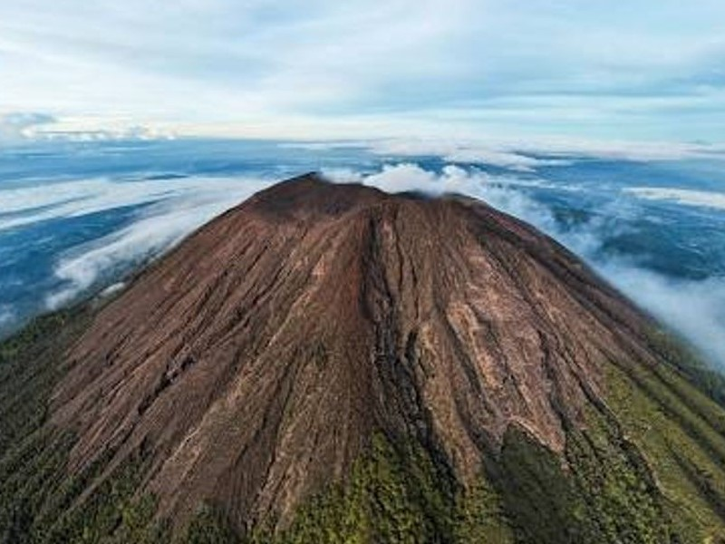

Peserta
Open Trip
Gunung
Rating
AlamLiar adalah penyedia layanan Open Trip pendakian gunung di Jawa Tengah dengan titik keberangkatan dari BSD dan Bintaro. Kami percaya bahwa mendaki gunung bukan sekadar mencapai puncak, tetapi juga menikmati perjalanan dengan aman, nyaman, dan penuh kebersamaan.
Keberangkatan dari BSD dan Bintaro.
Dipandu oleh guide yang memahami jalur pendakian.
P3K dan briefing keselamatan sebelum pendakian.
Foto dan video perjalanan sebagai kenang-kenangan.
Pilih gunung favoritmu dan nikmati pengalaman mendaki bersama AlamLiar.






Jadwal berikut adalah contoh. Nantinya dapat diubah sesuai jadwal keberangkatan terbaru.
| Gunung | Tanggal | Harga | Status |
|---|---|---|---|
| Merbabu | 25-26 Juli 2026 | Rp750.000 | Tersedia |
| Merapi | 08-09 Agustus 2026 | Rp650.000 | Tersedia |
| Sumbing | 22-23 Agustus 2026 | Rp800.000 | Penuh |
| Sindoro | 05-06 September 2026 | Rp800.000 | Tersedia |
Berikut fasilitas yang termasuk dan tidak termasuk dalam paket Open Trip AlamLiar.
✔ Transport PP
✔ Driver
✔ Guide Pendakian
✔ Simaksi
✔ Dokumentasi
✔ P3K
✘ Makan pribadi
✘ Porter
✘ Sewa Peralatan
✘ Pengeluaran pribadi
Boleh. Selama kondisi fisik sehat dan mengikuti arahan guide.
Pendaftaran dilakukan dengan pembayaran DP terlebih dahulu, kemudian pelunasan maksimal H-7 sebelum keberangkatan.
Meeting point berada di area BSD dan Bintaro. Lokasi detail akan dikirim melalui WhatsApp.
Bisa. Kami bekerja sama dengan penyedia rental perlengkapan outdoor.
Ayo bergabung bersama komunitas pendaki dan rasakan pengalaman pendakian yang aman, nyaman, dan menyenangkan.
Daftar Sekarang